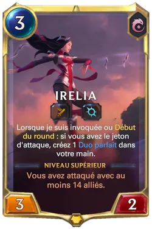
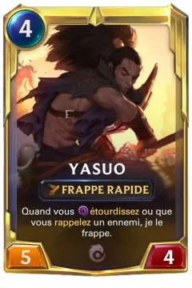
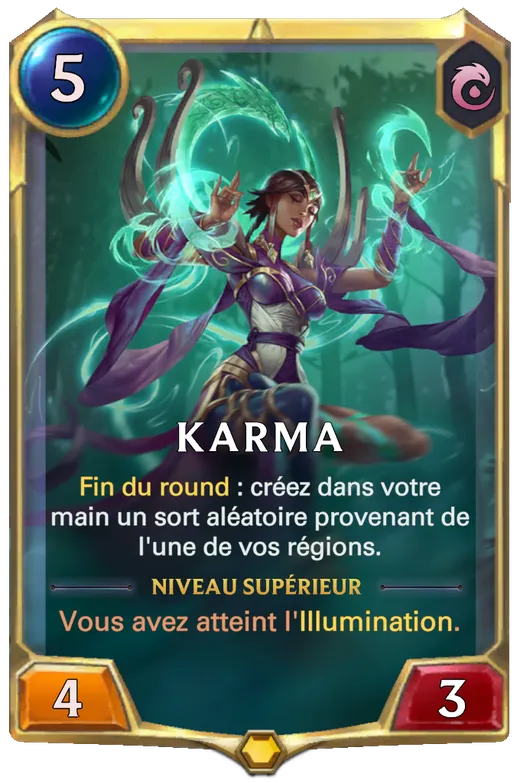

Plongez dans la sérénité et la sagesse avec les cartes d'Ionia, mettant en avant des personnages comme Irelia, Yasuo et Karma. Elles sont idéales pour les joueurs recherchant l'équilibre et la finesse
Irelia : Danseuse et guerrière redoutable, Irelia maîtrise l’art martial de la danse des lames. Leader de la résistance ionienne contre l’oppression, elle manipule des lames flottantes avec une précision et une grâce mortelles, symbolisant la force et la résilience de son peuple
Yasuo : Maître épéiste sans égal et porteur du vent, Yasuo est un samouraï vagabond en quête de rédemption. Accusé à tort du meurtre de son maître, il manie son épée avec grâce, utilisant le vent pour fendre ses ennemis tout en cherchant à laver son honneur
Karma : Incarnation vivante de l’esprit ionien, Karma est une guide spirituelle et une mage puissante. Elle possède une sagesse millénaire et canalise une énergie mystique pour protéger son peuple, alliant sérénité et détermination dans la défense d'Ionia